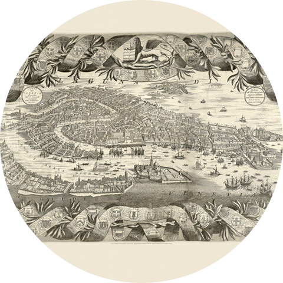
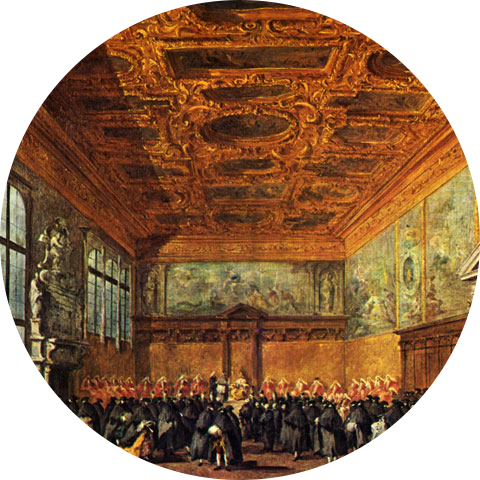
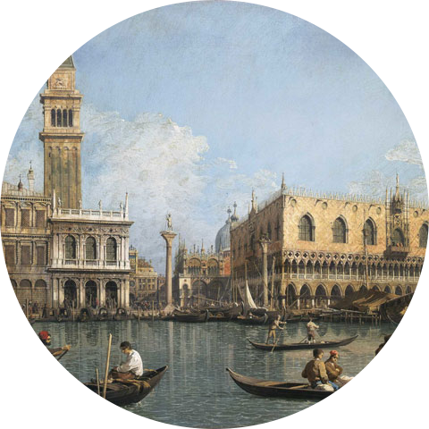
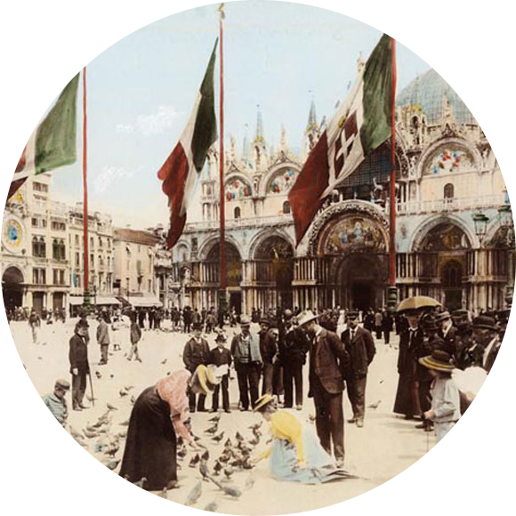
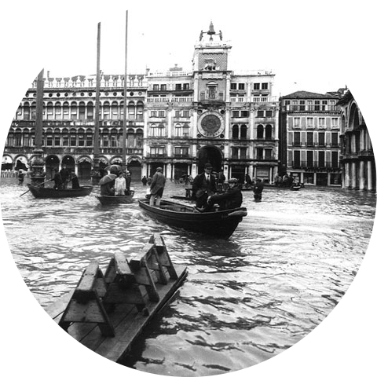
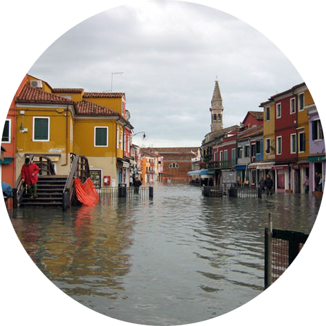
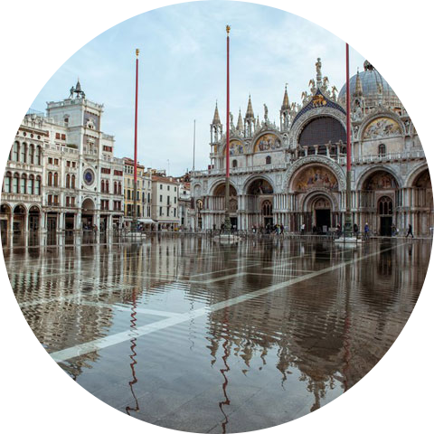
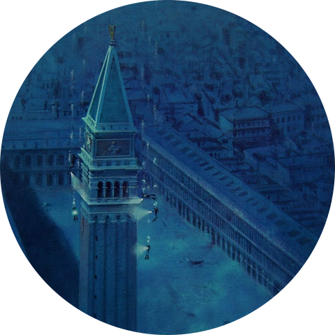
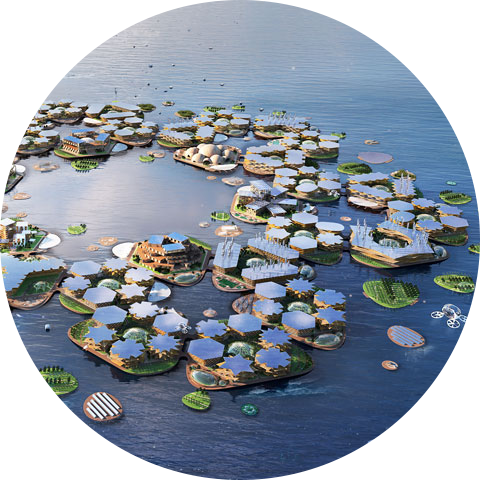

La storia della città
Dalla Venezia antica alla città galleggiante
Sul fondo del mare, a 400 metri di profondità sotto le case galleggianti di VeniceBric, si trova un’antica città sommersa, isolata nella sua quiete centenaria. È l’antica città di Venzia, da cui VeniceBric stessa ha avuto origine.
La città moderna e innovativa che conoscete oggi ha in realtà origini molto antiche ed una storia unica e ricca di avvenimenti.
-

La fondazione di Venezia
800 d.C.
Con la fine dell’Impero Romano alcune popolazioni italiche, in fuga dagli Unni e dai Longobardi, si rifugiarono ed insiediarono sulle isolette e nelle paludi della laguna veneta.
Venezia rimase poco più che una serie di piccoli villaggi di pescatori fino all’800 d.C. circa, periodo in cui iniziò ad acquisire sempre maggiore importanza per il commercio navale. -

L'epoca della Serenissima
1204
Venezia, governata dal Doge affiancato dal Consiglio dei Procuratori, riuscì a conquistare la supremazia marittima della zona fino a diventare un importante centro per il commercio delle spezie e dei tessuti provenienti dall’oriente.
In questo modo Venezia entrò a far parte delle Repubbliche Marinare con il nome di “Serenissima”. -

La lenta decadenza
1400
A partire dalla fine del 1400, con lo spostamento delle rotte commerciali verso le Americhe, la Repubblica lentamente iniziò a perdere potere.
Rimase comunque frale città più ammirate, tanto da ispirare con le sue mode raffinate, l’architettura, la letteratura e l’arte il genere di tutta Europa. -

Tra l'Austria e l'Italia
1797-1866
Il 12 Maggio del 1797 il doge Ludovico Manin, che amministrava la città, fu costretto da Napoleone Bonaparte ad abdicare.
Venezia fu prima possesso francese e poi austriaco, ma in seguito alla partecipazione ai moti rivoluzionari e dopo un breve periodo di indipendenza, nel 1866 entrò a far parte del Regno d’Italia. -

La grande alluvione
1966
Nel dopoguerra, si assistette alla grande espansione edilizia della terraferma veneziana ed iniziò l'esodo dal centro storico di una buona parte della popolazione.
L'evento che diede inizio a ciò fu la grande alluvione del 1966, che mostrò la vulnerabilità delle case al piano terra di Venezia, convincendo molti abitandi a spostarsi sulla terrraferma a Mestre. -

L'abbandono delle isole
2040
A causa del turismo di massa e del graduale, ma costante aumento del livello del mare dovuto ai cambiamenti climatici, sempre più abitanti della laguna veneta si spostarono sulla terraferma ed in altre città italiane.
Le isole di Venezia tra cui le famose Murano, Burano e Torcelli divennero isole disabitate, ma rimasero una meta per i turisti curiosi e nostalgici. -

Il punto di non ritorno
2050
Nel 2050 l'innalzamento del livello dei mari ha raggiunto il valore di 1 metro e la maggioranza degli appartamenti ai piani terra furono abbandonati.
I veneziani hanno iniziato a rendersi conto che erano purtroppo arrivati ad un "punto di non ritorno" ed hanno quindi iniziato a pensare ad una soluzione alternativa. Tra tutte le proposte hanno infine approvato quella di VeniceBric, una città galleggiante e sostenibile. -

Venezia sommersa
2200
Con l'innalzamento del livello dei mari, nel 2200 si è infine giunti alla sommersione completa dell'antica città di Venezia.
I veneziani hanno dato avvio alla costruzione della città galleggiante di Venicebric, utilizzando tecnologie moderne e all'avanguardia, attente alla sostenibilità ed alla preservazione dell'ambiente. -

L'inaugurazione di VeniceBric
2250
Ad inizio settembre del 2250 venne terminata la costruzione della città galleggiante di VeniceBric ed il mese successivo venne inaugurata la città.
Una buona parte dei primi abitanti di VeniceBric era costituita da ex-veneziani che non volevano abbandonare la loro città natale, ma furono tanti anche gli stranieri e gli italini che decisero di trasferirsi nella città galleggiante, attratti dalla sua unicità e innovazione.
I cambiamenti climatici
Perchè Venezia antica è stata sommersa?
Ai giorni nostri può sembrare quasi strano, ma fino a 100 anni fa gli uomini non erano così attenti a condurre uno stile di vita che avesse un basso impatto ambientale.
Con il passare del tempo, questo comportamento ha impattattato negativamente sulla biodiversità, sull’atmosfera, sugli oceani e sul suolo, conducendo ad un degrado ambientale, in alcuni casi grave e irreversibile. Questo è stato proprio il caso di Venezia, sommersa dalle acque del mare a causa dell’azione sconsiderata dell’uomo, ma come si è arrivati a ciò?
L’incremento dell’effetto serra
Con l’avanzare del processo d’industrializzazione, le attività industriali umane si sono intensificate e ciò ha portato ad un aumento delle emissioni di CO2 e di gas serra.
Inoltre, si è anche intensificato il fenomeno della deforestazione con la conseguente riduzione dell'assorbimento della CO2 da parte delle piante.
Tutto ciò ha quindi contribuito ad intensificare l’effetto serra.

Il riscaldamento globale
L’intensificazione dell’effetto serra ha portato ad un lento, ma graduale innalzamento della temperatura della superficie terrestre ovvero al surriscaldamento globale.
Tale fenomeno ha generato diversi effetti tra cui: l’aumento di fenomeni atmosferici estremi; la desertificazione; il riscaldamento e l’acidificazione degli oceani e lo scioglimento dei ghiacciai con il relativo aumento del livello degli oceani.
L’innalzamento dei mari
L’aumento del livello degli oceani è stato un fenomeno lento e graduale ma, a causa della mancanza dell’adozione di comportamenti più attenti all’ambiente, si è infine giunti ad un punto di non ritorno in cui molte isole e zone costiere del mondo sono state sommerse dai mari.
Tra queste vi è stata anche Venezia, ma i veneziani si erano già preparati a questo scenario ed avevano iniziato ad ideare e progettare una città galleggiante: VeniceBric.
La città
Le tecnologie della città galleggiante
Scopri di più sulle tecnologie e le tecniche che sono state utilizzate per costruire la città galleggiante.